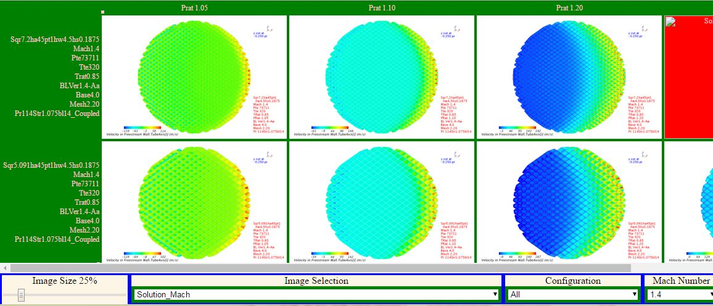
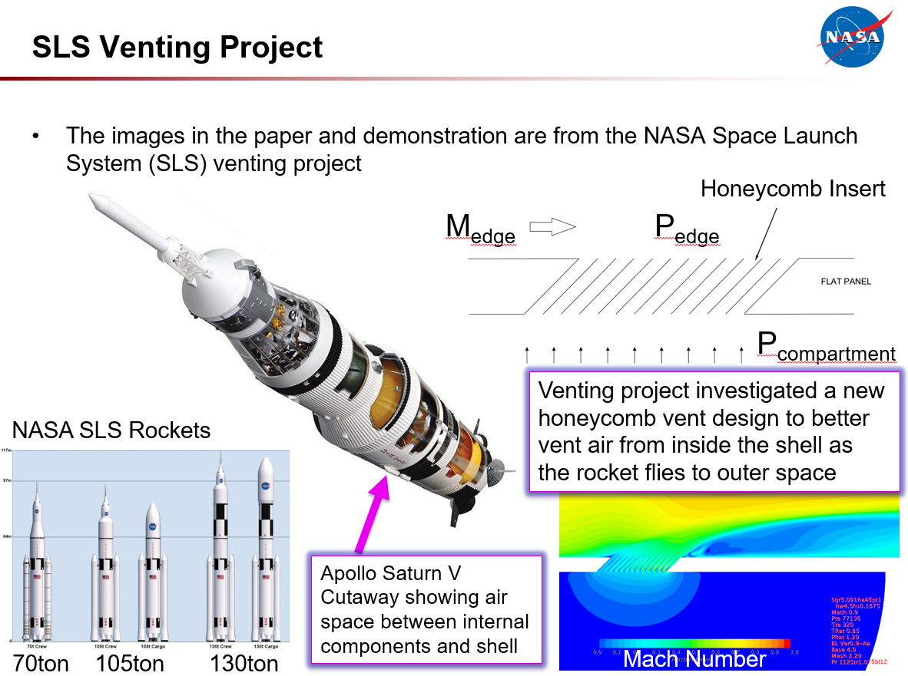

The MiniWall software is browser-based software that is used to analyze and understand large and small computationally and experimentally generated data sets. The MiniWall software presents a matrix view of plots and other visualization images and provides a responsive and productive way to investigate the data and extract knowledge and understanding from it. Since it is browser based, it runs on any computer or device that can display a web page. It can also be used remotely and securely by using web server software such as the Apache HTTP Server.
The MiniWall software was originally written by John Melton in 2006 using a combination of HTML, JavaScript, and Microsoft's ActiveX software. Paul Stremel rewrote it in 2012 using modern JavaScript and HTML standards which enabled it to be run on non-Microsoft Windows-based computers. Michael Schuh rewrote it in 2014 using JavaScript objects and extended the MiniWall software to have additional functionality that easily accommodates different usages. While it currently works best with the Google Chrome browser, it could be updated to run well under additional browsers such as Firefox, Internet Explorer, and Microsoft Edge.
Background and usage information about the MiniWall are available in this MiniWall Tool for Analyzing CFD and Wind Tunnel Large Data Sets January 2017 AIAA paper. By reading this paper and trying out the sample MiniWall below, you should be able to assess if a MiniWall would work for your application.
The AIAA MiniWall paper has screen shots from a sample MiniWall that was created for analyzing computational fluid dynamics (CFD) results from an investigation of a novel rocket venting design for the NASA Space Launch System (SLS) program. The project involved using CFD to predict the performance of different vent configurations at different rocket speeds and pressure ratios. The sample MiniWall includes images from CFD simulations of 3.6 inch, 5.0 inch, and 7.2 inch diameter vents with square honeycomb materials in a vent that is inclined in the direction of the flow. When the rocket is perched on the launch pad, the space between the outer skin of a rocket and the internal components, such as the fuel tanks, is filled with air at atmospheric pressure. As the rocket climbs up in the atmosphere the pressure outside of the rocket decreases and eventually goes to zero when the rocket is in outer space. The vents allow the air inside the rocket skin to flow to the outside to avoid pressure building up under the skin.
The sample MiniWall includes images for Mach 0.9 and 1.4. The Mach Number is the ratio of the rocket speed to the speed of sound in the air outside of the rocket. The Mach 0.9 simulation results for the 3.6, 5.0, and 7.2 inch diameter vents are in the first three rows in the sample MiniWall. They are followed by the results for the same vent sizes at Mach 1.6. The columns have seven different pressure ratios that represent the internal pressure divided by the external pressure. As the pressure ratio is increased, the faster the internal air will flow through the vent. The images for each simulation start out with some summary images that allow the researcher to quickly look through the key results. These are followed by more detailed investigations of the surface pressure, Mach Number, velocity, temperature, tube pressure, air flow visualization, and convergence results. The Pressure Ratio 1.20 results in the fourth column also have images showing the mesh. Some of the images show cuts through the honeycomb vent and at locations slightly outside and inside of the rocket skin. Again, see the MiniWall Tool for Analyzing CFD and Wind Tunnel Large Data Sets January 2017 AIAA paper for more information on how to run the sample MiniWall and customize it for your application.

Sample MiniWall
click to run this sample MiniWall.

Venting Project overview slide that describes the data in the sample MiniWall.
Here is a copy of the MiniWall NASA Open Source Agreement (NOSA). If people outside of NASA wish to contribute to the MiniWall software project, they will neeed to agree to and sign a Contributor License Agreement. Here are the individual and corporate Contributor License Agreements. The CLA is a legal document for a contributor to assign their rights to their contributions over to NASA in order for them to be incorporated into the MiniWall software. A manual signature is needed and can be submitted by fax or emailing a scan or a picture of the signed agreement by using the contact information at the end of the Contributor License Agreements.
Michael Schuh can be contacted by using the email address at the end of the MiniWall NASA Open Source Agreement.
Copyright © 2020 United States Government as represented by the Administrator of the National Aeronautics and Space Administration. All Rights Reserved.
No Warranty: The subject software is provided "as is" without any warranty of any kind, either expressed, implied, or statutory, including, but not limited to, any warranty that the subject software will conform to specifications, any implied warranties of merchantability, fitness for a particular purpose, or freedom from infringement, any warranty that the subject software will be error free, or any warranty that documentation, if provided, will conform to the subject software. This agreement does not, in any manner, constitute an endorsement by government agency or any prior recipient of any results, resulting designs, hardware, software products or any other applications resulting from use of the subject software. Further, government agency disclaims all warranties and liabilities regarding third-party software, if present in the original software, and distributes it "as is."
Waiver and Indemnity: Recipient agrees to waive any and all claims against the united states government, its contractors and subcontractors, as well as any prior recipient. If recipient's use of the subject software results in any liabilities, demands, damages, expenses or losses arising from such use, including any damages from products based on, or resulting from, recipient's use of the subject software, recipient shall indemnify and hold harmless the united states government, its contractors and subcontractors, as well as any prior recipient, to the extent permitted by law. Recipient's sole remedy for any such matter shall be the immediate, unilateral termination of this agreement.
{kind=link}